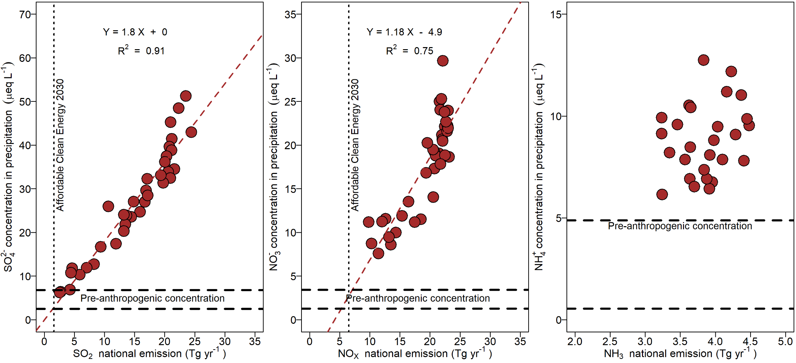
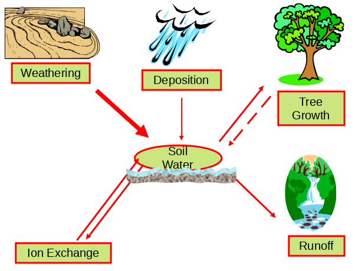
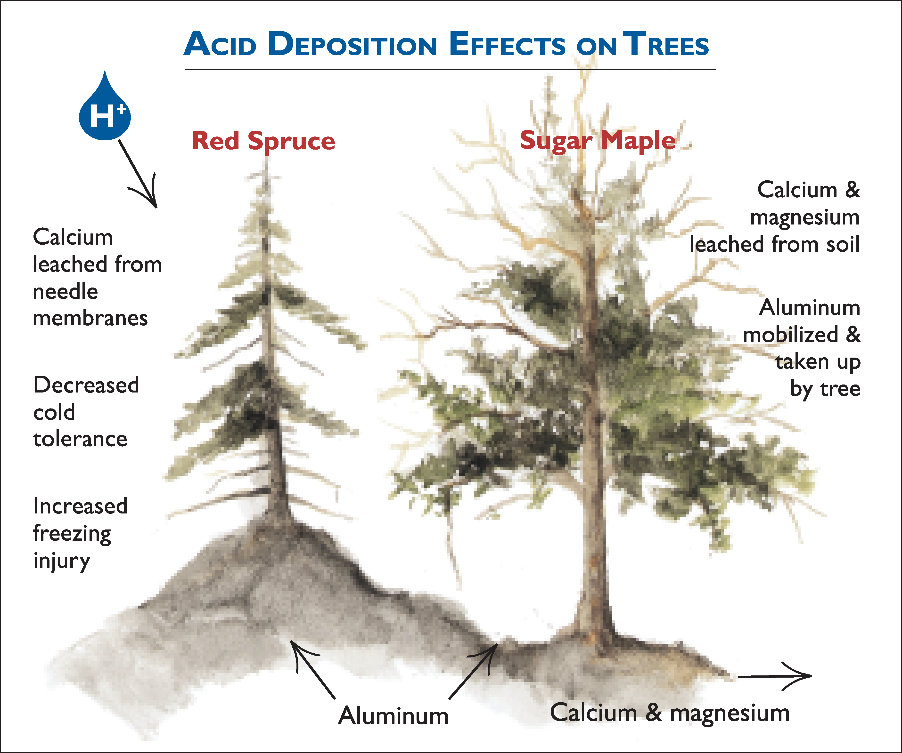
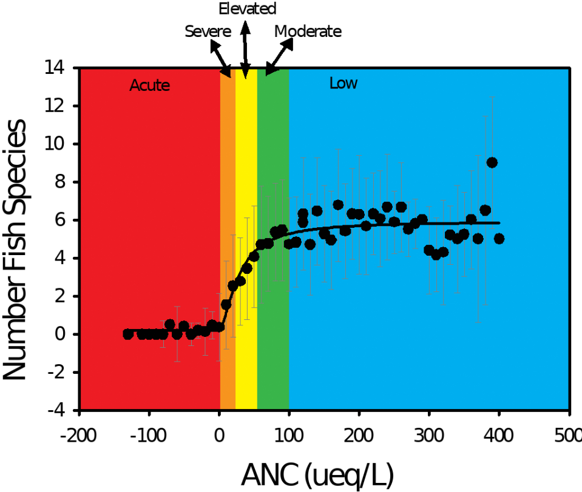

9 Ecosystem Effects of Acidic Deposition
In this video, Dr. Charley Driscoll describes the function of lysimeters in measuring soil water and the impacts of soil acidification from acid rain within northern hardwood forest ecosystems. Video filmed at the Throughfall mid Plot in the Hubbard Brook Experimental Forest on May 17, 2024.
Chapter Editor: Charles Driscoll and Habib Fakharaei
9.1 Abstract
Acidic deposition refers to acid and acidifying substances, including sulfuric and nitric acids and ammonium, derived from atmospheric emissions of sulfur dioxide, nitrogen oxides, and ammonia, respectively. Sulfur dioxide and nitrogen oxides are released largely by the burning of fossil fuels, while ammonia emissions are predominantly associated with agricultural activities. Atmospheric deposition delivers acids and acidifying compounds to the Earth’s surface, with adverse ecological effects largely occurring in sensitive regions downwind from elevated emissions in eastern North America, northern and central Europe and southern China. Acidic deposition has impacted foliage, and altered forest soils by depleting available calcium and magnesium and increasing concentrations of dissolved inorganic aluminum in soil waters, resulting in health effects to trees. Acidic deposition has also impaired the water quality in eastern North America and Europe by decreasing pH levels (i.e., increasing acidity) and acid-neutralizing capacity, and increasing dissolved inorganic aluminum concentrations. Many surface waters in acid-sensitive regions impacted by acidic deposition exhibit chronic and/or episodic (i.e., short-term) acidification which have reduced the species diversity and abundance of aquatic life. Most attention has been focused on fish, but entire food webs have been negatively affected. In North America and Europe recent decreases in sulfur dioxide and nitrogen oxide emissions have decreased acid deposition with some improvement in surface water quality. However, recovery of forest soils and biota has generally lagged. In this chapter effects of acidic deposition will be illustrated using examples from research conducted at the Hubbard Brook Ecosystem Study.
9.2 Introduction
For more than five decades, research at the HBEF has provided insight on effects of air pollution on the structure and function of ecosystems. Note that acidic deposition was first identified in North America at Hubbard Brook, NH (Likens et al., 1972). When first identified in the 1960s and 1970s, acidic deposition was viewed as a simple problem that was limited in scope. It is now evident that acids and acidifying compounds largely enter remote unmanaged ecosystems from long-range atmospheric transport and deposition. These air pollutants are transported through soil to surface waters, resulting in a range of complex and adverse ecosystem effects. In this chapter, information is synthesized on sources and patterns of acidic deposition, the effects of atmospheric sulfur and nitrogen deposition on sensitive forest and freshwater resources, and ecosystem recovery from emission control programs and mitigation strategies. These effects are largely illustrated using long-term research conducted at the HBEF.
9.3 Acidic Deposition
Acidic deposition is comprised of sulfuric and nitric acid derived from sulfur dioxide and nitrogen oxides, respectively, and ammonium resulting from emissions of ammonia. A detailed description of atmospheric deposition at Hubbard Brook and interactions of atmospheric deposition with the forest canopy is provided in another chapter in this volume (see Atmospheric Inputs chapter). Sulfur dioxide and nitrogen oxides originating from human activities are largely emitted to the atmosphere by the burning of fossil fuels, while ammonia is mostly the result of agricultural activities. Once these compounds enter an ecosystem, they can acidify soil and surface waters, bringing about a series of biogeochemical and ecological changes, discussed below. The term acidic deposition encompasses all forms of acid and acidifying compounds that are transported from the atmosphere to the Earth surface, including substances in gases, particles, rain, snow, cloudwater, and fog. Acidic deposition occurs as wet deposition which includes rain, snow, sleet or hail; as dry deposition, which includes atmospheric particles or gases; or as cloud or fog deposition, which is more common at high elevations and in coastal areas. Wet deposition is well characterized by monitoring at more than 270 National Atmospheric Deposition Programs (NADP; https://nadp.slh.wisc.edu/) sites in the U.S. In contrast, dry deposition is highly dependent on topography, meteorological conditions and vegetation characteristics, which can vary markedly over short distances in complex terrains. As a result, dry deposition is poorly characterized and highly uncertain. In the U.S., dry deposition is estimated through the Clean Air Status and Trends Network (CASTNet; http://www.epa.gov/castnet/), which includes about 90 sites.
Sulfuric and nitric acids lower the pH of rain, snow, soil, lakes, and streams. In 1964-65 when the first measurements of the pH of bulk deposition were made at Hubbard Brook, values ranged from 4.0 to 4.3, with an annual volume weighted value of 4.2. These values were 8 to 16 times more acidic than background conditions (pH ~ 5.2). In 2016-17, bulk deposition at Hubbard Brook had an annual average pH value of 5.1, which is only slightly more acidic than background conditions. These higher pH values reflect declines in emissions and acid deposition over the past five decades (see below).
Note that the acidity of precipitation is not only determined by the acidic pollutants (sulfur dioxide, nitrogen oxides) but rather reflects a balance between concentrations of acidic pollutants and acid neutralizing bases, such as calcium and magnesium derived from airborne soil particles and ammonia from agricultural emissions. At many locations in Asia, high concentrations of sulfate and nitrate in precipitation are not accompanied by low pH due to pH buffering from high concentrations of calcium and ammonia.
Acidic deposition trends in the eastern North America, Europe and east Asia mirror emission trends in the atmospheric source area or airshed. The atmospheric source area or airshed is the spatial area that supplies air pollutants that contribute to atmospheric deposition for a given location. Atmospheric source areas can encompass emission sources many hundreds of kilometers from deposition sites. Long-term data from Hubbard Brook show declining concentrations of sulfate in bulk deposition since measurements were initiated the mid 1960s which has coincided with decreases in sulfur dioxide emissions, and decreases in nitrate since the early 2000s due to decreases in nitrogen oxide emissions (see Atmospheric Inputs chapter). Based on these long-term data, a strong positive correlation exists between sulfur dioxide and nitrogen oxide emissions in the U.S. and sulfate concentrations and nitrate concentrations in wet or bulk deposition at Hubbard Brook (Figure 9.1). These observations suggest a cause and effect relationship between emissions of sulfur dioxide and nitrogen oxides and atmospheric deposition of sulfate and nitrate, respectively. Note that the relationships between emissions of sulfur dioxide and concentrations of sulfate in bulk and wet deposition suggest that current concentrations of sulfate are approaching measurements made in remote areas which have been used as estimates of pre-industrial deposition (Figure 9.1). While nitrate concentrations have decreased markedly, they remain somewhat elevated. Moreover, projections for future emission control programs, such as the Affordable Clean Energy plan, indicate that emissions could be decreased further beyond current values. Emissions of ammonia in the U.S. are less well characterized and have exhibited smaller changes.

9.4 Effects of Acidic Deposition on Forest Ecosystems
In acid-sensitive regions, acidic deposition alters soils, stresses forest vegetation, acidifies freshwaters, and harms fish and other aquatic life. These effects can interfere with important ecosystem functions and services, such as forest diversity and productivity and water quality and fisheries. Decades of acidic deposition have made many ecosystems more sensitive to continuing pollution. Moreover, the same pollutants that cause acidic deposition also contribute to an array of other important environmental issues at local, regional, and global scales (see Table 1).
Problem Linkage to Acid Deposition
Coastal, freshwater and terrestrial eutrophication Atmospheric deposition supplies nitrogen to ecosystems as a limiting nutrient increasing plant production and altering species composition.
Mercury Surface water acidification and sulfate deposition increases mercury accumulation in fish.
Visibility Sulfate, nitrate and ammonium aerosols diminish visibility and views.
Tropospheric ozone/ Climate change Emissions of nitrogen oxides contribute to the formation of ozone, and greenhouse gas formation9.4.1 Effects of Acidic Deposition on Forest Soils
Research has shown that acidic deposition has chemically altered soils with consequences for acid-sensitive ecosystems. Acid sensitive regions typically are forested and occur at higher elevation with soils that have limited supply of calcium and magnesium from minerals (Greaver et al., 2012). Soils compromised by acidic deposition lose their ability to neutralize continuing inputs of strong acids, provide poorer growing conditions for plants, alter the quality of waters draining through them, and extend the time needed for ecosystems to recover from acidic deposition.
Acidic deposition has altered and continues to alter soils in sensitive regions. Acidic deposition depletes available calcium and magnesium from soil exchange sites; facilitates the mobilization of dissolved inorganic aluminum into soil water; and increases the accumulation of sulfur and nitrogen in soil.
Loss of calcium and other nutrient cations
The cycling of calcium, magnesium and potassium in forest ecosystems involves the inputs and losses of these important nutrient cations (Figure 9.2). For most forest ecosystems, the supply of calcium and other nutrient cations largely occurs by weathering (i.e., the breakdown of rocks and minerals in soil). Calcium and other nutrient cations may also enter forests through atmospheric deposition. Although this pathway is generally small compared with chemical weathering, exceptions occur. For example, natural sources such as airborne soil particles originating from arid regions contribute to high atmospheric calcium deposition in northeastern Asia, and human emissions of particulate matter from cement production result in high atmospheric calcium deposition in South Asia. At Hubbard Brook, long-term decreases in calcium have been evident in wet and bulk deposition suggesting that historically cation inputs were elevated (see Atmospheric Inputs chapter).
Ecosystem losses of calcium largely occur by net forest uptake and leaching in drainage waters. An important pool of ecosystem calcium and other nutrient cations is the soil available pool or the soil cation exchange complex. Plants are able to utilize nutrients from soil exchange surfaces. Forest ecosystems that are naturally sensitive to acidic deposition are generally characterized by low rates of weathering and low quantities of available nutrient cations. Under conditions of elevated inputs of acidic deposition and subsequent transport of sulfate and nitrate in drainage waters, nutrient cations are displaced from available pools and leached from soil. This condition is not problematic for areas with high weathering rates and high pools of available nutrient cations. However, in acid-sensitive areas with shallow soil which are characterized by minerals that are resistant to weathering, like Hubbard Brook, the enhanced loss of calcium and other nutrient cations from acid-induced leaching can result in depletion of soil available pools. This problem can be exacerbated when forest harvesting also removes these minerals from soils.
Over the last century, acidic deposition has accelerated the loss of relatively large amounts of available calcium from soil in acid-sensitive areas. This depletion occurs when nutrient cations are displaced from the soil by acidic deposition at a rate faster than they can be replenished by the slow breakdown of rocks or deposition from the atmosphere. Depletion of nutrient cations can fundamentally alter soil processes, compromise the nutrition and health of sensitive trees species, influence adjacent surface waters, and limit the capacity for sensitive soils to recover. For example, it has been estimated that more than half of the available calcium has been lost from soil at Hubbard Brook over the past 70 years (Likens et al., 1996). Note that while acidic deposition to acid-sensitive areas is decreasing and there is some associated recovery of the acid neutralizing capacity (ANC) of surface waters, it appears that forest soils continue to exhibit depletion of exchangeable nutrient cations or at best are recovering soil pools of available nutrient cations at a very slow rate (see below).

Mobilization of aluminum
Aluminum is often released from soil to soil water, lakes, and streams in forested regions with high acidic deposition, low stores of available calcium, and acidic soil (Cronan and Schofield, 1990). One of the most significant ecological effects of acidic deposition is the mobilization of aluminum from soil and a shift in the form of aluminum in water from non-toxic organic forms to highly toxic inorganic forms.
Concentrations of aluminum increase markedly with decreases in pH below 6, particularly the toxic inorganic forms of aluminum. High concentrations of dissolved inorganic aluminum can be toxic to plants, fish, and other organisms. Concentrations of dissolved inorganic aluminum in acid-impacted surface waters in eastern North America and Europe are above levels considered toxic to fish (~ 2 umol/L) and much greater than concentrations observed in forest watersheds that receive low inputs of acidic deposition (Driscoll et al., 1988). Concentrations of dissolved organic matter in soil and surface waters bind dissolved aluminum and mitigate its toxicity.
Accumulation of sulfur and nitrogen in soil
Chronic atmospheric deposition of sulfur and nitrogen result in the accumulation of these elements in soil (Driscoll et al., 2001). The accumulation of nitrogen in soil can alter the structure and function of terrestrial ecosystems (Gilliam et al., 2019; Pardo et al., 2011). The accumulation of both sulfur and nitrogen in soil can acidify soil and surface waters if they become mobilized as sulfate and nitrate, respectively, from soil stores, for example in response to disturbance or decreases in atmospheric deposition. An important process is the adsorption of sulfate, which strongly occurs in soil enriched in iron and aluminum oxides in regions that have not been glaciated (Rochelle and Church, 1987). Under conditions of increasing atmospheric sulfate deposition, sulfate is readily retained in strongly adsorbing soils, mitigating acidification effects on streamwater to an extent. In northern forest watersheds, like Hubbard Brook, sulfur in soil is mostly associated with organic matter mostly as carbon bonded sulfur or ester sulfate (Likens et al., 2002). As atmospheric sulfate deposition decreases in response to decreases in emissions, sulfate can be released from soil where it has accumulated historically in organic and inorganic forms due to decades of elevated deposition. This mobile sulfate can be transported to streams delaying recovery from acidification.
Elevated nitrogen deposition to forests can also result in the accumulation of nitrogen in soils affecting microbial processes involving transformations of nitrogen, such as mineralization, nitrification and denitrification (see Ch. ##, this volume). Mobilization of nitrate following nitrification can contribute to delayed recovery from acidification in the same way as for sulfate. Unlike sulfur, chemical adsorption of nitrogen is a minor process, and most of the nitrogen is stored in soils in organically bound forms.
9.4.2 Effects of acidic deposition on trees

Starting in the 1960s scientists reported effects of air pollution on trees. Some of the most dramatic effects on forests were observed in Central Europe, where the term “waldsterben” or tree death was used to describe the phenomenon. Areas in Europe that were the most impacted by forest decline include portions of Germany particularly the Black Forest and Bavaria, the Czech Republic, Poland and Switzerland. In North America acidic deposition has contributed to the decline of red spruce and sugar maple trees in the eastern U.S. (Driscoll et al., 2001; Figure 9.3). Symptoms of tree decline include poor condition of the canopy, reduced growth, and unusually high levels of mortality.
Red Spruce
Starting the 1960s, more than half of large red spruce canopy trees in the Adirondack Mountains of New York and the Green Mountains of Vermont and approximately one quarter of the trees in the White Mountains of New Hampshire died (DeHayes et al., 1999). Acidic deposition and associated winter freezing injury were the major cause of red spruce decline at high elevations in the Northeast.
The decline of red spruce is linked to the leaching of calcium from cell membranes in spruce needles by acid mist or fog (DeHayes et al., 1999). The loss of calcium renders the needles more susceptible to freezing damage, thereby reducing the tolerance of trees to low temperatures and increasing the occurrence of winter injury and subsequent tree damage or death. In addition, elevated aluminum concentrations in the soil may limit the ability of red spruce roots to take up water and nutrients. Water and nutrient deficiencies can lower the tolerance of red spruce to other environmental stresses and cause decline. In recent years with decreases in acid deposition and climate warming, red spruce decline has abated and tree growth has greatly increased in the northeastern U.S. (Wason and Dovciak, 2017).
Sugar Maple
Extensive mortality among sugar maples appears to have resulted from deficiencies of calcium and magnesium, coupled with other stresses such as insect defoliation or drought (Sullivan et al., 2013). The probability of decreases in the vigor of the sugar maple canopy or incidence of tree death increases on sites where the supply of calcium and magnesium to soil and foliage are lowest and stress from insect defoliation and/or drought is high. Low levels of calcium and magnesium cations can cause a nutrient imbalance and reduce the ability of a tree to respond to stresses such as insect infestation and drought. In contrast to red spruce, sugar maple does not appear to be recovering in response to decreases in acid deposition.
9.5 Effects of Acidic Deposition on Freshwater Aquatic Ecosystems
9.5.1 Surface water acidification
Acidic deposition degrades surface water quality by lowering pH (i.e., increasing acidity); decreasing acid-neutralizing capacity (ANC; the ability of a water to neutralize inputs of strong acids); and increasing dissolved inorganic aluminum concentrations. Acidification of surface waters due to elevated inputs of acidic deposition has been reported in many acid-sensitive area receiving elevated inputs of acidic deposition, including Great Britain, Northern, Central and Eastern Europe, southwestern China, southeastern Canada, the Northeast, Upper Midwest and Appalachian mountain regions of the U.S. Large portions of the high elevation western North America are also potentially sensitive to acidic deposition; however, atmospheric deposition to this region is relatively low. Concern over effects of acidic deposition in the Mountain West and California may be overshadowed by potential effects of elevated nitrogen deposition, including eutrophication of naturally nitrogen-limited lakes (Fenn et al., 2003).
To illustrate the regional impacts of acidic deposition, a comprehensive survey of lakes greater than 0.2 ha in surface area in the Adirondack region of New York was conducted in the mid 1980s to obtain detailed information on the acid-base status of waters in this region. Of the 1469 lakes surveyed, 24% had summer pH values below 5.0. Also 27% of the lakes surveyed were chronically acidic (i.e., ANC less than 0 µeq/L) and an additional 21% were susceptible to episodic acidification (i.e., ANC between 0 and 50 µeq/L). An analysis of the chemical composition of these lakes illustrates that these lakes have predominantly been acidified by atmospheric deposition of sulfate and to a lesser extent nitrate.
Seasonal acidification is the increase in acidity and the corresponding decrease in pH and ANC in streams and lakes that occurs during Fall, Winter and Spring. Episodic acidification occurs by the sudden pulse (over hours to days) of acids and a dilution of base cations (e.g., calcium) associated with hydrologic events such as Spring snowmelt and large rain events in the Spring and Fall. Increases in nitrate are often important to the occurrence of acid episodes. These conditions tend to occur when trees are dormant and therefore retaining less nitrogen. At some sites short-term increases in sulfate and organic acids can also contribute to episodic acidification. Episodic acidification often coincides with pulsed increases in concentrations of dissolved inorganic aluminum. Short-term increases in acid inputs to surface waters can reach levels that are lethal to fish and other aquatic organisms. All of the acid-sensitive and acid-impacted regions referenced above have documented effects associated with episodic acidification.
9.5.2 Response of aquatic biota to acidification of surface waters by acidic deposition
Decreases in pH and elevated concentrations of dissolved inorganic aluminum have resulted in physiological changes to organisms, direct mortality of sensitive life history stages, and reduced the species diversity and abundance of aquatic life in many streams and lakes in acid-impacted areas. Fish have received the most attention to date, but entire food webs, including plankton and invertebrates, have been adversely affected (Lovett et al., 2009). Early surveys and experiments at Hubbard Brook showed that stream macroinvertebrates are sensitive to low pH and elevated concentrations of dissolved inorganic aluminum (Hall et al. 1980, 1983; see Ch. ##).
In the Adirondacks, a significant positive relationship exists between the pH and ANC levels in lakes and the number of fish species present in those lakes (Figure 9.4). Surveys of 1,469 Adirondack lakes conducted in 1984 and 1987 show that 24 percent of lakes (i.e., 346) in this region did not support fish. These lakes had consistently lower pH and ANC, and higher concentrations of aluminum than lakes that contained one or more species of fish. Experimental studies and field observations demonstrate that even acid-tolerant fish species such as brook trout have been eliminated from some waters.

Studies demonstrate effects of acidic deposition on fish at three ecosystem levels (Driscoll et al., 2001):
Effects on single organisms (e.g., condition factor - the relationship between the weight and the length of a fish). Fish condition factor is related to several chemical indicators of acid-base status, including minimum pH. This analysis suggests that fish in acidic streams use more energy to maintain internal chemistry that would otherwise be used for growth.
Population-level effects (increased mortality). Bioassay experiments show greater mortality in chronically acidic streams than in streams with high acid neutralizing capacity. Eggs and fry are sensitive life history stages for fish.
Community–level effects (reduced species richness). The species richness of fish and other aquatic organisms decreases with decreasing acid neutralizing capacity and pH.
Although chronically high levels of acidity stress aquatic life, acid episodes are particularly harmful because abrupt, large changes in water chemistry allow fish few areas of refuge (Driscoll et al., 2001). High concentrations of dissolved inorganic aluminum are directly toxic to fish and pulses of aluminum during acid episodes are a primary cause of fish mortality. High acidity and aluminum levels disrupt the salt and water balance of blood in a fish, causing red blood cells to rupture and blood viscosity to increase. Studies show that the viscous blood strains the heart of a fish, resulting in a lethal heart attack.
9.6 Recovery from decreases in acid deposition and mitigation
Trends in surface water chemistry in Europe and northeastern North America indicate that chemical recovery of aquatic ecosystems impacted by acidic deposition has been occurring over a large geographic scale since the early 1980s. Some regions are showing rather marked recovery, while others exhibit little increase in acid neutralizing capacity (Driscoll et al., 2016; Kahl et al., 2004). Based on long-term monitoring, virtually all surface waters impacted by acidic deposition in Europe and northeastern North America exhibit decreases in sulfate concentrations in recent decades. This pattern is consistent with decreases in emissions of sulfur dioxide and atmospheric sulfate deposition, and is evident from long-term observations of streamwater at Hubbard Brook (-1.57 µeq/L-yr; Figure 5; Likens et al., 2002). At Hubbard Brook, decreases in stream sulfate have occurred to the extent that now variations in meteorological conditions are currently an important controller of stream sulfate concentrations (Mitchell and Likens, 2011). The exception to this pattern of decreases in stream sulfate in response to decreases in atmospheric sulfur deposition is evident in un-glaciated regions of the southeastern U.S. Watersheds of the southeastern U.S. exhibit strong retention of atmospheric sulfate deposition by highly weathered soils, and this historical pool of adsorbed sulfate can act as an internal source of sulfate that leaches into drainage waters as atmospheric inputs decrease. However, there is evidence that this pattern is changing. In Pennsylvania and northern Virginia and West Virginia, watersheds are shifting from a pattern of net retention of sulfate to net release of sulfate, with decreases in atmospheric sulfate deposition (Rice et al., 2014). It is likely that this delayed pattern of recovery will continue and migrate southward with continued decreases in atmospheric sulfate deposition. Several sites in the eastern U.S are also experiencing decreases in surface water nitrate concentrations, including Hubbard Brook (-0.16 µeq/L-yr; Figure 5) although the magnitude of the decline and linkage of this pattern to atmospheric deposition is less clear than for sulfate (Gilliam et al., 2019; Groffman et al., 2018).
While sulfate and nitrate concentrations in lakes and streams have decreased in the eastern North America and Europe over the last 20 years, they remain high compared to background conditions. In contrast, sulfate and nitrate concentrations in stream water in southwestern China have increased over the past two decades associated with increases in emissions and atmospheric deposition.
Regions in the U.S. that are showing some surface waters with statistically significant increases in acid neutralizing capacity include lakes in the Adirondacks and New England and streams in Northern to Central Appalachian Plateau of the Catskills of New York, western Pennsylvania and northern Virginia. Increases in stream acid neutralizing capacity have been evident at Hubbard Brook in response to decreases in atmospheric deposition, albeit at relatively slow rates (0.68 µeq/L-yr; Figure 5).
Three factors account for delays in the chemical recovery of acid impacted surface waters, despite large decreases in deposition of sulfate and nitrate. First, levels of acid-neutralizing base cations in surface waters have decreased markedly. This decrease is largely due to decreases in concentrations of sulfate plus nitrate, which facilitate cation leaching. However, the loss of available base cations from soil due to historical leaching from elevated inputs of sulfate and nitrate has also contributed (Driscoll et al., 2001) (section 3.1.1). Second, sulfur and nitrogen that has accumulated in the soil under past elevated atmospheric deposition is now being released to surface waters as sulfate and nitrate with decreases in atmospheric sulfate and nitrate deposition (Likens et al., 2002; Mitchell and Likens, 2011) (section 3.1.3). Finally, in regions with cooler climate, naturally occurring organic matter is increasingly mobilized from soil to surface waters (Fakhraei and Driscoll, 2015; Monteith et al., 2007). This phenomenon is called “browning” because natural organic matter imparts a brown color to water. Natural organic matter includes organic acids which contribute to the acidification of surface waters and increases offset recovery from acid deposition. While recovery is evident in regions previously acidified by acid deposition that are now experiencing decreases in these inputs, this recovery of acid-impacted soils and surface waters could be accelerated by additional cuts in emissions of sulfur dioxide, nitrogen oxides and ammonia.
While there has been notable chemical recovery of surface waters from effects of acidic deposition, the recovery of forest soils and trees and aquatic biota has been mixed, as the legacy effects of a century of historical acidic deposition are difficult to overcome. Of greatest concern is probably the depletion of available nutrient cations (calcium, magnesium) from soil (see section 3.1.1) that can only be recovered by long-term mineral weathering (or by artificial addition through liming, see below). Mineral weathering is an inherently slow process in acid sensitive regions. Model simulations suggest the recovery of the soil exchange complex, and therefore the organisms whose health is linked to the calcium and magnesium status of soils, will only gradually occur over multiple decades or centuries. This recovery has not yet started because available nutrient cations are still being depleted from soil. This delayed recovery does not bode well for species like sugar maple whose regeneration and health are closely linked to the exchangeable calcium content or base saturation of soil (Sullivan et al., 2013). In contrast, red spruce, which experienced decreases in cold tolerance from leaching membrane-bound calcium linked to acid deposition, is now recovering due to decreases in acidic deposition coupled with warmer winters associated with climate change (Wason and Dovciak, 2017; Kosiba et al. 2017).
Although chemical recovery of ecosystems has been evident in northern North America and Europe and some recovery of aquatic biota has been reported (Josephson et al., 2014), wide spread biological recovery from acidic deposition has lagged (Baldigo et al., 2016). First, chemical recovery of surface waters from acidic deposition must precede biological recovery (Driscoll et al., 2001). Following chemical recovery, lower trophic organisms must recover before higher trophic organisms, such as fish. If fish communities are lost due to acidification, they must reenter the ecosystem through migration or stocking. Finally, the acid-resistant communities that have adapted to acidic conditions or new organisms that are more tolerant to changing climate may make it difficult for organisms that were prevalent prior to the advent of acidic deposition to recover and resume their prominence in aquatic ecosystems.
Beyond emission control, chemical recovery from acid deposition can be accomplished by addition of calcium carbonate or other weatherable calcium minerals to soil through a process referred to as liming (Driscoll et al., 1996; Lawrence et al., 2015). As liming artificially enhances the supply of basic cations to soil and drainage waters, it is an effective approach to improve the acid-base status of soil and surface waters accelerating the recovery of ecosystems from acid deposition.
An experiment was initiated in 1999 in W1 at the HBEF to examine the role of calcium supply in regulating the structure and function of the forest ecosystem. However, rather than experimentally adding lime (CaCO3), calcium silicate (CaSiO3) or wollastonite was applied uniformly to the entire watershed by helicopter (see photo; Peters et al., 2004) at a level designed to replace the calcium that was lost as a result of a century of acidic deposition. Wollastonite was used as a mechanism for calcium supply in the experiment because it weathers relatively readily and is a silicate mineral, like the most of the native minerals at the HBEF. The wollastonite was finely ground (median diameter 9.6 µm) bound together to pellet size (1.5 to 4 mm diameter) with a lignosulfonate binder. The added wollastonite had a distinctive strontium isotope ratio that allowed for tracing the treatment into ecosystem pools. The pellets disintegrated upon contact with water when they reached the watershed, releasing the finely ground wollastonite for ease in dissolution. The initial response of the watershed was a marked increase in the calcium, dissolved silica, pH and acid neutralizing capacity of streamwater associated with direct stream and near stream inputs of wollastonite (Figure 6). After the initial pulsed input concentrations decreased but not to pre-application values. The added wollastonite was largely retained in the watershed where it dissolved releasing calcium to cation exchange surfaces associated with the forest floor. Over time the added calcium migrated through the forest floor to the mineral soil (Johnson et al., 2014). This watershed treatment resulted in long-term increases in soil solution and stream calcium, dissolved silica, pH, acid neutralizing capacity and dissolved organic carbon and decreases in dissolved inorganic aluminum in W1 compared to the reference watershed (W6; Figure 6). Within years of the treatment, the added calcium was assimilated first by herbaceous vegetation and then overstory trees. The applied wollastonite was able to reverse the effects of acid deposition on decline in the health of red spruce (Hawley et al., 2006) and sugar maple (Juice et al. 2006; Battles et al., 2014), providing clear evidence of the pollutant effects on forests.
9.7 Questions for Further Study
- How long and to what extent will soil and surface water respond to decreases in emissions and acidic deposition?
- Will sulfur and nitrogen that has been stored in soil following elevated atmospheric deposition be reversibly lost from ecosystems after inputs decrease or will they be permanently sequestered and how long will it take for this process to occur?
- Will terrestrial and aquatic biotic resources recover from the effects of acidic deposition?
- If biological recovery occurs, how long will it take and will biotic communities be different from those prior to the advent of acidic deposition? *Will ecosystems experience long-term legacies from effects of elevated acidic deposition?
9.8 Access Data
- Hubbard Brook Watershed Ecosystem Record (HBWatER). 2021. Continuous precipitation and stream chemistry data, Hubbard Brook Ecosystem Study, 1963 – present. ver 5. Environmental Data Initiative. https://doi.org/10.6073/pasta/925f84652f1d8590de1da00bd136b005 (Accessed 2021-09-20).
9.9 References
Baldigo, B. P., Roy, K. M., & Driscoll, C. T. (2016). Response of fish assemblages to declining acidic deposition in Adirondack Mountain lakes, 1984–2012. Atmospheric Environment, 146, 223–235. https://doi.org/10.1016/j.atmosenv.2016.07.049
Battles, J. J., Fahey, T. J., Driscoll, C. T., Jr., Blum, J. D., & Johnson, C. E. (2014). Restoring soil calcium reverses forest decline. Environmental Science & Technology Letters, 1, 15–19. https://doi.org/10.1021/ez400033d
Cronan, C. S., & Schofield, C. L. (1990). Relationships between aqueous aluminum and acidic deposition in forested watersheds of North America and northern Europe. Environmental Science & Technology, 24, 1100–1105. https://doi.org/10.1021/es00077a022
DeHayes, D. H., Schaberg, P. G., Hawley, G. J., & Strimbeck, G. R. (1999). Acid rain impacts on calcium nutrition and forest health. BioScience, 49, 789–800. https://doi.org/10.2307/1313570
Driscoll, C. T., Cirmo, C. P., Fahey, T. J., Blette, V. L., Bukaveckas, P. A., Burns, D. A., Gubala, C. P., Leopold, D. J., Newton, R. M., Raynal, D. J., Schofield, C. L., Yavitt, J. B., & Porcella, D. B. (1996). The experimental watershed liming study: Comparison of lake and watershed neutralization strategies. Biogeochemistry, 32, 143–174. https://doi.org/10.1007/BF00002985
Driscoll, C. T., Driscoll, K. M., Fakhraei, H., & Civerolo, K. (2016). Long-term temporal trends and spatial patterns in the acid–base chemistry of lakes in the Adirondack region of New York in response to decreases in acidic deposition. Atmospheric Environment, 146, 5–14. https://doi.org/10.1016/j.atmosenv.2016.08.034
Driscoll, C. T., Johnson, N. M., Likens, G. E., & Feller, M. C. (1988). The effects of acidic deposition on stream water chemistry: A comparison between Hubbard Brook, New Hampshire and Jamieson Creek, British Columbia. Water Resources Research, 24, 195–200. https://doi.org/10.1029/WR024i002p00195
Driscoll, C. T., Lawrence, G. B., Bulger, A. J., Butler, T. J., Cronan, C. S., Eagar, C., Lambert, K. F., Likens, G. E., Stoddard, J. L., & Weathers, K. C. (2001). Acidic deposition in the northeastern United States: Sources and inputs, ecosystem effects, and management strategies. BioScience, 51, 180–198. https://doi.org/10.1641/0006-3568(2001)051[0180:ADITNU]2.0.CO;2
Fakhraei, H., & Driscoll, C. T. (2015). Proton and aluminum binding properties of organic acids in surface waters of the northeastern U.S. Environmental Science & Technology, 49, 2939–2947. https://doi.org/10.1021/es504024u
Fenn, M. E., Baron, J. S., Allen, E. B., Rueth, H. M., Nydick, K. R., Geiser, L., Bowman, W. D., Sickman, J. O., Meixner, T., Johnson, D. W., & Neitlich, P. (2003). Ecological effects of nitrogen deposition in the western United States. BioScience, 53, 404–420. https://doi.org/10.1641/0006-3568(2003)053[0404:EEONDI]2.0.CO;2
Gilliam, F. S., Burns, D. A., Driscoll, C. T., Frey, S. D., Lovett, G. M., & Watmough, S. A. (2019). Decreased atmospheric nitrogen deposition in eastern North America: Predicted responses of forest ecosystems. Environmental Pollution, 244, 560–574. https://doi.org/10.1016/j.envpol.2018.09.135
Greaver, T. L., Sullivan, T. J., Herrick, J. D., Barber, M. C., Baron, J. S., Cosby, B. J., Deerhake, M. E., Dennis, R. L., Dubois, J. J. B., Goodale, C. L., Herlihy, A. T., Lawrence, G. B., Liu, L., Lynch, J. A., & Novak, K. J. (2012). Ecological effects of nitrogen and sulfur air pollution in the U.S.: What do we know? Frontiers in Ecology and the Environment, 10, 365–372. https://doi.org/10.1890/110049
Groffman, P. M., Driscoll, C. T., Durán, J., Campbell, J. L., Christenson, L. M., Fahey, T. J., Fisk, M. C., Fuss, C., Likens, G. E., Lovett, G. M., Rustad, L., & Templer, P. H. (2018). Nitrogen oligotrophication in northern hardwood forests. Biogeochemistry, 141, 523–539. https://doi.org/10.1007/s10533-018-0445-y
Hawley, G. J., Schaberg, P. G., Eagar, C., & Borer, C. H. (2006). Calcium addition reduced winter injury to red spruce. Canadian Journal of Forest Research, 36, 2544–2549. https://doi.org/10.1139/x06-130
Johnson, C. E., Driscoll, C. T., Blum, J. D., Fahey, T. J., & Battles, J. J. (2014). Soil chemical dynamics after calcium silicate addition. Soil Science Society of America Journal, 78, 1458–1468. https://doi.org/10.2136/sssaj2014.03.0114
Josephson, D. C., Robinson, J. M., Chiotti, J., Jirka, K. J., & Kraft, C. E. (2014). Chemical and biological recovery from acid deposition. Environmental Monitoring and Assessment, 186, 4391–4409. https://doi.org/10.1007/s10661-014-3706-9
Kahl, J. S., et al. (2004). Have U.S. surface waters responded to the Clean Air Act Amendments? Environmental Science & Technology, 38, 484A–490A. https://doi.org/10.1021/es040390y
Lawrence, G. B., Hazlett, P. W., Fernandez, I. J., Ouimet, R., Bailey, S. W., Shortle, W. C., Smith, K. T., & Antidormi, M. R. (2015). Declining acidic deposition reverses soil acidification. Environmental Science & Technology, 49, 13103–13111. https://doi.org/10.1021/acs.est.5b02904
Likens, G. E., Bormann, F. H., & Johnson, N. M. (1972). Acid rain. Environment, 14, 33–40. https://doi.org/10.1080/00139157.1972.9933099
Likens, G. E., Driscoll, C. T., & Buso, D. C. (1996). Long-term effects of acid rain. Science, 272, 244–246. https://doi.org/10.1126/science.272.5259.244
Lovett, G. M., Tear, T. H., Evers, D. C., Findlay, S. E. G., Cosby, B. J., Dunscomb, J. K., Driscoll, C. T., & Weathers, K. C. (2009). Effects of air pollution on ecosystems. Annals of the New York Academy of Sciences, 1162, 99–135. https://doi.org/10.1111/j.1749-6632.2009.04153.x
Mitchell, M. J., & Likens, G. E. (2011). Watershed sulfur biogeochemistry. Environmental Science & Technology, 45, 5267–5271. https://doi.org/10.1021/es200370s
Monteith, D. T., et al. (2007). Dissolved organic carbon trends. Nature, 450, 537–540. https://doi.org/10.1038/nature06308
Pardo, L. H., et al. (2011). Effects of nitrogen deposition in U.S. ecoregions. Ecological Applications, 21, 3049–3082. https://doi.org/10.1890/10-2342.1
Peters, S. C., Blum, J. D., Driscoll, C. T., & Likens, G. E. (2004). Dissolution of wollastonite. Biogeochemistry, 67, 309–329. https://doi.org/10.1023/B:BIOG.0000015780.73491.21
Rice, K. C., Scanlon, T. M., Lynch, J. A., & Cosby, B. J. (2014). Sulfur deposition and watershed response. Environmental Science & Technology, 48, 10071–10078. https://doi.org/10.1021/es501546s
Rochelle, B. P., & Church, M. R. (1987). Regional sulfur retention patterns. Water, Air, & Soil Pollution, 36, 61–73. https://doi.org/10.1007/BF00229675
Sullivan, T. J., Lawrence, G. B., Bailey, S. W., McDonnell, T. C., Beier, C. M., Weathers, K. C., McPherson, G. T., & Bishop, D. A. (2013). Acid deposition effects on sugar maple. Environmental Science & Technology, 47, 12687–12694. https://doi.org/10.1021/es401864w
Sutton, M. A., et al. (2011). The European nitrogen assessment. Cambridge University Press.
Wason, J. W., & Dovčiak, M. (2017). Tree demography and species range shifts. Global Change Biology, 23, 3335–3347. https://doi.org/10.1111/gcb.13584